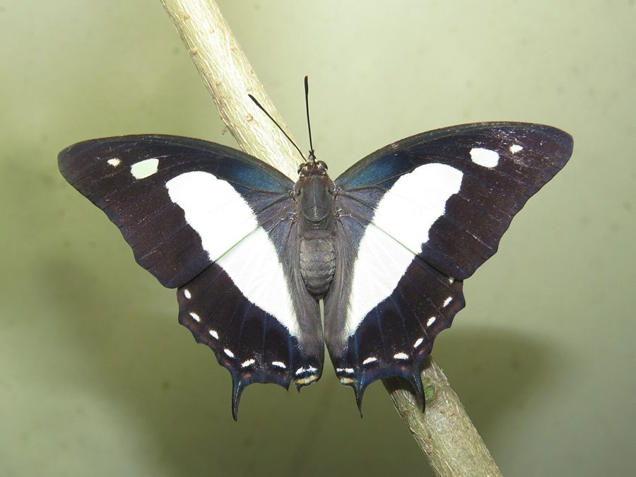

कॉमन नवाब तितलीCommon Nawab
Polyura athamas · Nymphalidae · INS-0195

- Scientific name वैज्ञानिक नाम
- Polyura athamas (Drury, 1773)
- Family कुल
- Nymphalidae
- Hindi हिंदी
- कॉमन नवाब तितली
- Local names स्थानीय नाम
- common nawab, nawab titli, common nawab butterfly, do-puchhi nawab
- Status here यहाँ की स्थिति
- native
- Movement आवागमन
- Resident, here all year
- Known from कहाँ दर्ज
- Others have published records from the wider Awadh–Purvanchal plain, none yet from Basti–Ayodhya अवध–पूर्वांचल से दूसरों के प्रकाशित अभिलेख, बस्ती–अयोध्या से अभी नहीं
- IUCN IUCN
- not evaluated
- Review समीक्षा
- not yet reviewed
When to look कब देखें
Present all year. साल भर मौजूद।
Uses and possibilities उपयोग और संभावनाएँ
Drawn from the documented uses in the profile below, where each is labelled traditional, current or a research lead. All uses →
Tell it apart from इनसे अलग पहचानें
कॉमन नवाब तितली / Common Nawab
Polyura athamas (Drury, 1773) — Nymphalidae
कॉमन नवाब तितली — घने जंगलों और बड़े बगीचों के ऊपरी छत्र में रहने वाली एक बहुत बड़ी और शक्तिशाली तितली है। इसके मखमली काले पंखों के बीच में पन्ना जैसा चमकदार हरा-पीला पट्टा होता है जो उड़ते समय बहुत सुंदर दिखता है। इसके पिछले पंखों पर दो नुकीली पूँछें होती हैं। यह बहुत तेज गति से उड़ती है और फूलों के बजाय सड़े हुए फलों तथा नम मिट्टी पर बैठती है। इसके कैटरपिलर के सिर पर चार सींग जैसे मुकुट होते हैं।
Quick Identification त्वरित पहचान
| Feature | Description |
|---|---|
| Size | Large, heavily built nymphalid; wingspan 60–75 mm (Kehimkar 2008) |
| Upperside Ground | Deep velvety brownish-black to jet black (Wynter-Blyth 1957) |
| Central Discal Band | Broad, luminous apple-green or translucent greenish-yellow discal band (Evans 1932) |
| Forewing Markings | One or two small pale green subapical spots beyond the discal band (Bingham 1905) |
| Hindwing Tails | Two sharply pointed, curved tails at veins 2 and 4 on each hindwing (Kehimkar 2008) |
| Underside Ground | Pale buff to yellowish-brown, repeating the silvery-green band edged with maroon (Bingham 1905) |
| Flight Dynamics | Exceptionally fast, powerful, dashing flight high in tree canopies (Kunte 2000) |
Field tip: Look in mature village groves and riparian woodlands where old siris, babool, or tamarind trees stand. A large black butterfly with a glowing greenish-yellow central band and two sharp tails on each hindwing, descending swiftly to mud or rotting fruit, is the Common Nawab.
हिंदी: पेड़ों के ऊपर बहुत तेजी से उड़ने वाली इस बड़ी काली तितली के पंखों पर चमकदार हरा-पीला पट्टा और पिछले पंखों पर दो नुकीली पूँछें होती हैं।
Morphology आकारिकी
Biometrics recorded from adult specimens in museum collections and regional surveys (Kehimkar 2008; Evans 1932):
| Measurement | Range | Source |
|---|---|---|
| Wingspan | 60–75 mm | Kehimkar (2008) |
Adult description: The Common Nawab is a robust, muscular butterfly exhibiting slight sexual dimorphism (Bingham 1905). The upperside ground colour in both sexes is deep velvety brownish-black (Wynter-Blyth 1957). Crossing the disc of both wings is a broad, continuous, semi-hyaline discal band of luminous apple-green or pale greenish-yellow (Kehimkar 2008). On the forewing, this band begins broadly at the dorsal margin and tapers toward the costa, accompanied by two small pale green spots situated in the subapical area (Evans 1932).
The hindwing upperside continues the broad pale green discal band down to the abdominal margin, bordered outwardly by a narrow submarginal line of tiny ochreous or whitish lunules (Bingham 1905). Projecting from the termen of each hindwing are two conspicuous, slender, pointed tails: an upper tail at vein 4 and a slightly longer lower tail at vein 2 (Bingham 1905). In females, the wings are slightly broader and the green discal band is wider and paler than in males (Wynter-Blyth 1957).
The underside is pale yellowish-buff or pinkish-brown, crossed by the prominent silvery apple-green central band, which is cleanly outlined on both sides by narrow chocolate-maroon and white margins (Kehimkar 2008). The thorax is powerful and heavily muscled, clothed in dense brownish-black hair above and pale buff beneath; the antennae are stout, black, and tipped with an elongate club (Bingham 1905).
Larval Stage इल्ली अवस्था
The caterpillar is solitary and slug-like (limaciform), rich velvety dark green, and adorned with oblique pale yellowish lateral stripes along the abdominal segments. Its most extraordinary feature is the head capsule: a large, flattened, dark green head bordered with yellow and bearing four long, backward-curving, spinose horns that give it the appearance of a miniature dragon (Kunte 2000). The pupa is short, barrel-shaped, smooth, bright emerald-green, and suspended by the cremaster from the underside of a host twig (Kehimkar 2008).
हिंदी: इसका पंखों का फैलाव 60 से 75 मिमी होता है। ऊपरी पंख काले और बीच से चमकीले हरे होते हैं। इसकी इल्ली के सिर पर चार सींग होते हैं।
Behaviour & Ecology व्यवहार और पारिस्थितिकी
The Common Nawab is an arboreal, high-canopy butterfly of deciduous forests, riverine woodlots, and mature village orchards (Kehimkar 2008). Adults spend much of the day in the upper canopy of lofty trees, perching on sunlit leaves twelve to fifteen metres above the ground (Kunte 2000). Its flight is among the swiftest and most powerful of any Indian butterfly: a whirlwind rush of rapid wingbeats, diving steeply down tree crowns and hurtling across woodland clearings with astounding speed (Wynter-Blyth 1957).
Males are aggressively territorial and occupy established vantage points high in canopy trees, actively launching aerial assaults against intruding birds, dragonflies, and other butterflies before returning to the exact same perch (Kehimkar 2008). Unlike pierids and papilionids, the Common Nawab is almost never observed visiting flowers for nectar (Kunte 2000). Instead, adults are passionately attracted to fermenting juices from overripe fruits, leaking sap from injured tree trunks, wet mammal dung, urine-soaked ground, and carrion (Kehimkar 2008). Males frequently descend to river sandbars and gravel beds in the morning to mud-puddle, holding their wings tightly closed over the back (Kunte 2000).
हिंदी: यह तितली ऊँचे पेड़ों की चोटियों पर रहती है और बहुत तेज उड़ती है। यह फूलों का रस नहीं पीती, बल्कि सड़े हुए फलों, पेड़ों के रस और नम जमीन से पोषक तत्व लेती है।
Life Cycle / Phenology जीवन चक्र
Seasonal phenology in northern Indian plains across the agricultural calendar (Kunte 2000; Kehimkar 2008):
| Season / Month | Stage | Field Observation |
|---|---|---|
| July–August (Kharif monsoon) | Egg & Larva | Breeding starts on fresh canopy foliage of albizia and acacia (Kunte 2000) |
| September–November (Post-monsoon) | Adult peak | Highest flight activity; territorial males prominent in canopies (Kehimkar 2008) |
| December–January (Rabi winter) | Larva & Pupa | Caterpillars feed slowly; pupae overwinter attached to branches (Bingham 1905) |
| February–April (Spring / Zaid) | Adult emergence | Spring brood emerges, descending to mud-puddle along drying streams (Wynter-Blyth 1957) |
| May–June (Pre-monsoon summer) | Adult & Egg | Highly heat-resilient; active around deep shady canopies (Kunte 2000) |
The female deposits spherical, smooth, pale yellow eggs singly on the upper surface of mature leaflets of leguminous host trees (Kunte 2000). The egg develops a reddish-brown ring near the apex before hatching after a few days. The young dragon-headed caterpillar spins a silken pad on the upper surface of a leaflet, where it rests quietly between nocturnal feeding excursions (Kunte 2000). Larval development lasts several weeks through five instars. Pupation takes place under a twig, lasting about ten days to two weeks before adult emergence. Several generations succeed each other throughout the year.
हिंदी: मादा बबूल या सिरिस की पत्तियों पर एक-एक अंडा देती है जो कुछ दिनों में फूटता है। ड्रैगन जैसे सिर वाली इल्ली रात को पत्ते खाती है और कुछ हफ्तों में तितली बनती है।
Host Plants or Prey आहार
Documented larval host plants from published Indian lepidopteran surveys (Kunte 2000; Kehimkar 2008):
- Acacia nilotica (Babool, family Fabaceae) — widespread thorny tree supporting breeding broods in rural woodlots (Kunte 2000).
- Albizia lebbeck (Siris, family Fabaceae) — favoured canopy shade tree heavily utilized for egg-laying (Kehimkar 2008).
- Senegalia catechu (Khair, family Fabaceae) — dry deciduous scrub tree supporting wild populations (Kehimkar 2008).
- Senegalia rugata (Shikakai, family Fabaceae) — thorny forest climber utilized along woodland margins (Kunte 2000).
Adults feed strictly on non-floral nutrients: sap oozing from bruised bark, fermenting fallen mangoes and guavas, animal carcasses, wet mammal dung, and damp sand (Kehimkar 2008).
हिंदी: इसके कैटरपिलर बबूल, सिरिस, खैर और शिकाकाई की पत्तियां खाते हैं। वयस्क तितलियाँ सड़े हुए फलों, गोबर और पेड़ों के रस से अपना भोजन प्राप्त करती हैं।
Predators / Natural Enemies शत्रु
Common insectivorous predators of the Gangetic plain likely to take the Common Nawab:
- Birds: Large canopy-foraging birds, such as black drongos, rufous treepies, and shikras, hunt adults during canopy territorial sorties.
- Lizards: Large calotes lizards and monitor lizards (Varanus bengalensis) prey on mud-puddling adults resting on sandbars.
- Insects: Praying mantises capture adults feeding on tree sap; predatory stink bugs attack caterpillars.
- Parasitoids: Tachinid flies and ichneumonid wasps heavily parasitize the horned caterpillars on host trees.
हिंदी: बड़े शिकारी पक्षी (जैसे भुजंगा और शिकरा) उड़ती हुई तितली को पकड़ते हैं। गिरगिट और गोह जमीन पर बैठी तितली पर झपटते हैं। इल्लियों पर परजीवी मक्खियाँ हमला करती हैं।
Agricultural / Human Relevance कृषि प्रासंगिकता
Forestry and agriculture: The Common Nawab causes zero harm to agricultural crops, orchards, or commercial timber plantations (Kunte 2000). Its larvae feed selectively on the expansive canopies of leguminous trees like Albizia lebbeck (Siris) and Acacia nilotica (Babool), consuming an infinitesimal fraction of the tree's total foliage that has no effect on wood production or tree vitality.
Ecological role: Because adults do not visit flowers, they do not function as traditional pollinators, but play an essential ecological role in recycling decaying organic matter and nutrient cycling by feeding on animal excreta and decaying fruits (Kehimkar 2008).
Traditional: No traditional medicinal, economic, or cultural uses are recorded.
Today: Highly prized by wildlife photographers and nature lovers as one of the most magnificent and regal butterflies of the Indian subcontinent.
Research direction (a lead, not a result): Investigating the sensory receptor mechanisms by which adults detect volatile organic sulfides and fermentation esters from considerable distances.
हिंदी: यह तितली किसी फसल को नुकसान नहीं पहुँचाती। यह सड़े हुए फलों और सड़ी-गली चीजों को साफ करने में मदद करती है और जंगलों की प्राकृतिक सुंदरता बढ़ाती है।
Expected Locally स्थानीय रूप से अपेक्षित
Not a field record. Written from published accounts for eastern Uttar Pradesh. No confirmed local sighting yet — if you have seen it, that is what the atlas needs.
अभी तक स्थानीय पुष्टि नहीं। यह विवरण प्रकाशित स्रोतों से है, किसी अवलोकन से नहीं।
The Common Nawab is expected across eastern Uttar Pradesh in mature village woodlots, along canal embankments lined with old siris and babool trees, and in riparian forest corridors. Look around lofty canopy perches in full sunshine, or watch damp sandy edges of village streams and ponds from July through November. GBIF holds published records from the wider Awadh–Purvanchal plain, none yet from Basti–Ayodhya. A photograph with date and location, submitted through the About page, would confirm the first local documentation for the district.
Distribution वितरण
Global range: Widespread across the Indo-Malayan realm, including India, Nepal, Bhutan, Bangladesh, Sri Lanka, Myanmar, Thailand, Indochina, southern China, Peninsular Malaysia, and Indonesia (Bingham 1905).
In India: Found throughout the Western Ghats, central India, the lower Himalayas, the Gangetic plain, and the northeastern states to the borders of Myanmar (Evans 1932; Kehimkar 2008).
In Uttar Pradesh: Documented from terai forest tracts, riverine acacia forests, and mature countryside groves throughout central and eastern districts.
In Basti district / eastern UP: Expected as a resident breeding species in mature village woodlots and roadside tree belts containing large albizia and acacia trees.
हिंदी: यह भारत और पूरे दक्षिण-पूर्व एशिया में पाई जाती है। उत्तर प्रदेश के उन सभी इलाकों में यह मौजूद है जहाँ सिरिस और बबूल के पुराने पेड़ हैं।
Research Questions शोध प्रश्न
- What volatile chemical components in rotting fruit or sap most effectively attract adult Common Nawabs in canopy bait traps? / सड़े हुए फलों के कौन से तत्व इस तितली को सबसे ज्यादा आकर्षित करते हैं?
- How do the horned head defenses of the caterpillar function against predatory arboreal ants on Albizia lebbeck?
- What is the average canopy territory holding time for resident males during sunny afternoon hours?
- How severely does the felling of mature roadside Albizia trees affect local Nawab breeding metapopulations? / सड़कों के किनारे से सिरिस के पुराने पेड़ काटने पर इस तितली की आबादी पर क्या असर पड़ता है?
- What proportion of mud-puddling adults recorded along riverbanks are males versus females?
Similar Species मिलती-जुलती प्रजातियाँ
| Species | How to tell apart | हिंदी | |
|---|---|---|---|
| Moduza procris ([[commander\ | Commander]]) | Bright reddish-chestnut ground colour with a pure white discal band; lacks the dual pointed tails on each hindwing | कमांडर — लाल पंख और सफेद पट्टा |
| Neptis hylas ([[common_sailer\ | Common Sailer]]) | Distinctly smaller; black and white with sailing flight; lacks green bands or hindwing tails | कॉमन सेलर — बिना पूँछ वाली छोटी तितली |
| Phalanta phalantha ([[common_leopard\ | Common Leopard]]) | Bright tawny yellow upperside marked with scattered black spots; lacks green central band and tails | कॉमन लेपर्ड — चित्तीदार पीला रंग |
Field rule: A large, powerfully built butterfly with a luminous apple-green central band across velvety black wings and two distinct pointed tails on each hindwing is the Common Nawab.
हिंदी: कमांडर तितली लाल और सफेद होती है और कॉमन सेलर काले-सफेद रंग की होती है, जबकि कॉमन नवाब मखमली काली होती है जिस पर चमकदार हरा पट्टा और दो पूँछें होती हैं।
Taxonomy & Classification वर्गीकरण
Original description. Described by Dru Drury in [1773] as Papilio athamas in Illustrations of Natural History; Wherein Are Exhibited... Figures of Exotic Insects, Volume 1, page 5, plate 2, figure 4 (index). Type locality: "China".
Subspecies. Multiple subspecies are recognized across the Oriental realm. The population inhabiting the mainland of northern India and the Gangetic plain is classified as the nominotypical subspecies Polyura athamas athamas (Drury, 1773).
Family and order placement. Order Lepidoptera, family Nymphalidae, subfamily Charaxinae, tribe Charaxini. The genus Polyura Billberg, 1820, comprises the nawabs, famous for their horned larvae and rapid flight.
Phylogenetic notes. Polyura is closely allied to the genus Charaxes (the rajahs), distinguished by genitalic structure, wing shape, and larval cranial horn morphology (Bingham 1905).
IUCN status rationale. Not evaluated (NE) on the IUCN Red List of Threatened Species. It is an abundant, secure, and widely distributed butterfly across South and Southeast Asia.
हिंदी: इसका वैज्ञानिक नाम Polyura athamas है और यह Nymphalidae परिवार की तितली है। प्रकृति में इसका अस्तित्व पूरी तरह सुरक्षित है।
Photo Gallery फोटो गैलरी
No photos yet — add field photos to media/species/common_nawab/ and run node scripts/sync_photos.js.
Photos needed आवश्यक फोटो
- [ ] Adult basking with wings open showing luminous apple-green band (धूप में पंख फैलाए बैठी तितली का हरा पट्टा)
- [ ] Underside showing delicate buff ground and twin hindwing tails (पंखों के नीचे की बनावट और दो पूँछें)
- [ ] Dragon-headed caterpillar on albizia or acacia twig (सिरिस की टहनी पर बैठी चार सींगों वाली इल्ली)
- [ ] Adult feeding on rotting fruit or mud-puddling on sand (सड़े फल पर रस चूसती या रेत पर बैठी तितली)
References संदर्भ
- Drury, D. (1773). Illustrations of Natural History; Wherein Are Exhibited... Figures of Exotic Insects, Vol. 1. B. White, London, p. 5, pl. 2, fig. 4.
- Bingham, C. T. (1905). The Fauna of British India, Including Ceylon and Burma. Butterflies, Vol. 1. Taylor and Francis, London, pp. 220–222.
- Evans, W. H. (1932). The Identification of Indian Butterflies. 2nd edition. Bombay Natural History Society, Mumbai, p. 171.
- Wynter-Blyth, M. A. (1957). Butterflies of the Indian Region. Bombay Natural History Society, Mumbai, pp. 148–149.
- Kehimkar, I. (2008). The Book of Indian Butterflies. Bombay Natural History Society and Oxford University Press, Mumbai, p. 384.
- Kunte, K. (2000). Butterflies of Peninsular India. Universities Press, Hyderabad, pp. 142–144.
- Varshney, R. K. & Smetacek, P. (2015). A Synoptic Catalogue of the Butterflies of India. Butterfly Research Centre, Bhimtal and Indinov Publishing, New Delhi, p. 208.
- GBIF Occurrence Data — Polyura athamas, India (2025).
Source file: species/fauna/insects/common_nawab.md